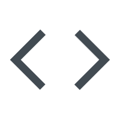

Projects
Various Projects I Have Worked On Across The Tech Field To Gain A Breadth Of Knowledge & Understanding Of Various Technologies.
Portfolio Website
This website was designed from the base up. I created this to both expand my knowledge of hard coding a website, as well as to have a platform to showcase any past or future projects i may undertake. This webiste is a work in progress, and any feedback is welcome.
- 


Python Calculator
This Python-based Calculator App was developed in a CLI environment as part of a Level 3 Diploma. It performs calculations, handles user input, and includes error checking for validation. I enhanced the UI using the Colorama library for colored text. Through this project, I gained skills in Python concepts like functions, error handling, and input validation, and learned how to plan and build reusable code.

Home Media Server
As a family man and movie enthusiast, I designed a home media server to store digital content and stream it to our living room TV. Using an old Dell OptiPlex, I upgraded the RAM and storage, installed Windows 10, and removed unnecessary software. I chose Plex for its user-friendly interface, integration with streaming services, and metadata features. For secure remote access and maintenance, I implemented TeamViewer. Additionally, I set up a network drive for file sharing across home devices.
Hesk Ticketing System
During my Level 2 IT Support Diploma, I tackled the challenge of lacking access to ticketing software due to college restrictions. I chose Hesk, a free and customizable ticketing tool, for its user-friendliness and web-based access. To host the software, I used AWS’s free tier for cloud-based deployment and set up an Ubuntu VM with Apache. I configured Hesk, creating user accounts, setting up categories, and designing ticket presentation to enhance student learning. This solution provided practical experience in ticketing systems and showcased my ability to integrate cloud infrastructure and virtualization for effective problem-solving.